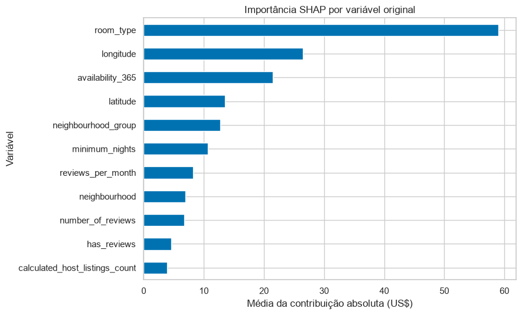
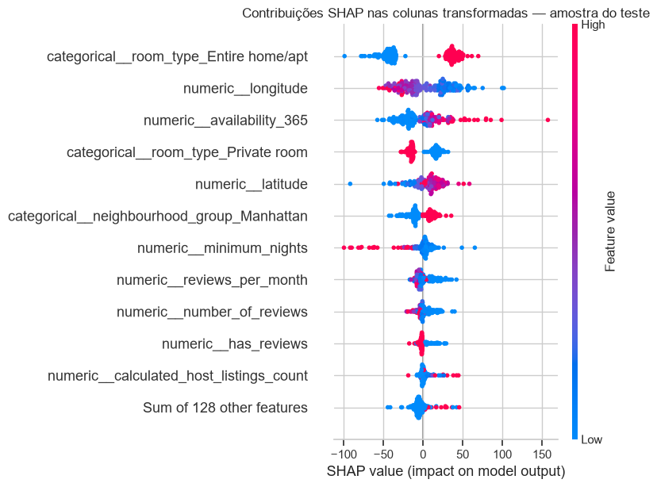
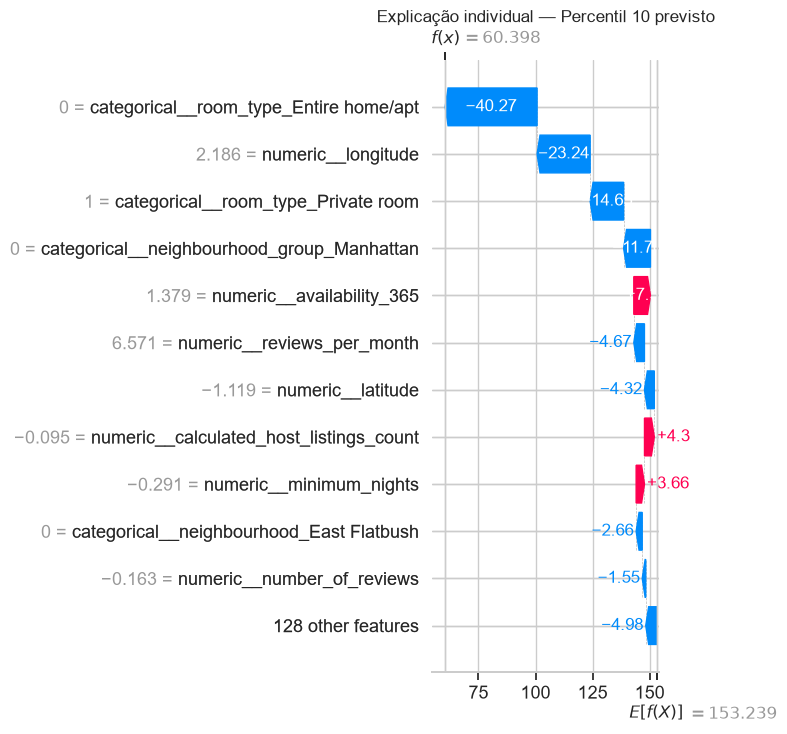
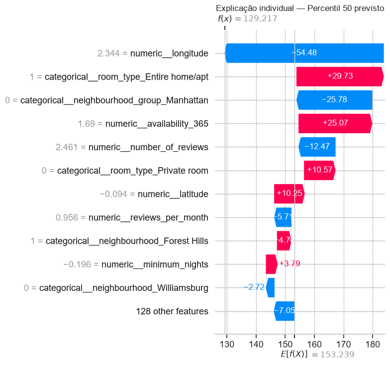
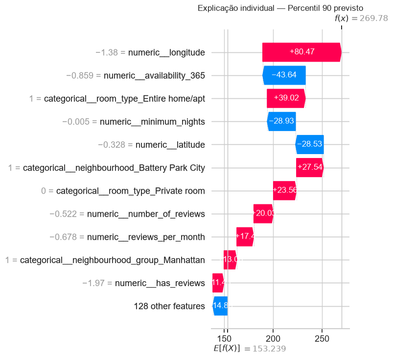

APS2 — interpretação e discussão crítica
Coeficientes e importância das árvores
| Modelo | Três maiores valores na medida própria do modelo |
|---|---|
| Ridge, coeficientes absolutos | Tribeca: +US$ 167,37; acomodação inteira: +US$ 78,56; Manhattan: +US$ 64,89. |
| Floresta, importância por impureza | Longitude: 0,209; latitude: 0,147; disponibilidade anual: 0,126. |
Os coeficientes do Ridge representam mudanças na escala das variáveis transformadas; colunas numéricas foram padronizadas, enquanto as colunas one-hot representam categorias. A importância interna da floresta mede redução de impureza e pode favorecer variáveis com mais possibilidades de corte. O one-hot mantém todas as categorias, sem uma referência omitida: um contraste entre tipos exige subtrair seus coeficientes. Bairro, borough e coordenadas tampouco variam de modo independente em imóveis reais. Essas medidas explicam o ajuste, mas não demonstram causalidade. O scikit-learn documenta a limitação da importância por impureza.
SHAP do modelo escolhido
O modelo final é a floresta com agrupamento de categorias raras. A análise global com TreeExplainer usa 200 anúncios do teste escolhidos com semente fixa; três casos são explicados individualmente. As contribuições SHAP foram calculadas nas colunas transformadas e depois somadas por variável original; essa soma não equivale a recalcular SHAP com coalizões agrupadas; valor-base mais contribuições reconstrói as previsões com diferença numérica inferior a US$ 0,01.
Nos gráficos detalhados, os números ao lado das variáveis numéricas estão na escala padronizada usada pelo modelo, não em graus de latitude/longitude ou dias originais. As contribuições horizontais, por sua vez, estão em US$.
As maiores contribuições absolutas médias por variável original são tipo de acomodação (US$ 58,99), longitude (US$ 26,47) e disponibilidade anual (US$ 21,45). A divergência parcial em relação ao ranking por impureza mostra que as medidas resumem aspectos diferentes do ajuste. Documentação do TreeExplainer.


Três previsões individuais
As previsões correspondem a valores próximos dos percentis 10, 50 e 90 do preço previsto no teste; a escolha não dependeu de acertarem ou errarem o preço real.
| Caso | Previsto | Real | Três maiores contribuições por variável original |
|---|---|---|---|
| Baixo | US$ 60,40 | US$ 65,00 | Tipo: -54,37; longitude: -23,24; borough: -12,02. |
| Mediano | US$ 129,22 | US$ 168,00 | Longitude: -54,48; tipo: +41,24; borough: -27,64. |
| Alto | US$ 269,78 | US$ 195,00 | Longitude: +80,47; tipo: +63,28; disponibilidade: -43,64. |



As figuras mostram por que o modelo produziu cada valor, inclusive no caso alto, em que superestimou o preço real em US$ 74,78. Uma explicação fiel da previsão não garante uma previsão correta.
Duas limitações adicionais do modelo final
- Sem incerteza individual calibrada. A floresta fornece uma estimativa pontual; MAE não é margem de erro para cada imóvel. Uma evolução seria estimar quantis e verificar cobertura e largura dos intervalos em dados reservados, inclusive por segmento. Exemplo de regressão quantílica no scikit-learn.
- Limitação estrutural de extrapolação. Com o critério
squared_error, cada folha prevê uma média dos targets do treino, e a floresta combina essas médias. Assim, a previsão fica no intervalo de preços aprendido; aumentar uma feature além dos cortes das árvores não prolonga uma tendência linear. Essa é uma limitação da arquitetura para situações fora do suporte do treino, distinta do erro empírico nos anúncios caros. Operacionalmente, casos fora do domínio exigem sinalização e revisão; novos regimes de preço exigem novos dados e revalidação. Esta conclusão decorre da definição de folhas e agregação na documentação de RandomForestRegressor.
Duas limitações adicionais dos dados
- Erro de localização e de fronteira de bairro. O Inside Airbnb informa anonimização das coordenadas e atribuição de bairros a partir delas. Imóveis próximos a uma fronteira podem receber informação geográfica imprecisa. O CSV não permite reconstruir endereços nem medir esse erro por anúncio; relações de micro-localização devem ser interpretadas com cautela. Premissas da fonte.
- Calendário possivelmente desatualizado. Além de não medir ocupação, a disponibilidade pode conter informação antiga: o Inside Airbnb observa que alguns anfitriões não mantêm o calendário atualizado. O CSV não registra a última atualização do calendário por anúncio, então não é possível quantificar nem corrigir essa defasagem. Isso pode acrescentar erro de medição à feature; uma operação futura deveria registrar a coleta e a atualização, quando disponíveis. É uma possibilidade documentada pela fonte, não uma falha comprovada em todos os registros. Premissas da fonte.
Duas ações de operação e manutenção
- Servir o pipeline completo com validação de entrada. Versionar a preparação determinística (incluindo zero estrutural e
has_reviews) e carregar conjuntamente imputação, encoder e estimador; conferir schema, unidades, valores inválidos, categorias novas e disponibilidade das features no momento da previsão. Registrar versão e sinalizar casos fora do domínio, incluindo anúncios novos sem histórico. Isso evita divergência entre preparação no treino e na aplicação. Pipelines e erros comuns. - Monitorar e revalidar antes de substituir. Acompanhar MAE e resíduos quando novos preços anunciados forem observados, além de volume, ausências e categorias novas por borough e tipo. A faixa de preço real só pode ser monitorada depois de observar o target. Registrar dataset, parâmetros e versões; investigar degradação, retreinar com dados recentes e aprovar uma nova versão somente após avaliação em dados reservados apropriados ao uso, mantendo a versão anterior para reversão. Validação cruzada e teste reservado.
O conjunto representa preços anunciados em 2019. Não mede preço pago, ocupação ou receita e não descreve o mercado atual. Veja também as limitações levantadas na APS1.
Referências
- Inside Airbnb — Data Assumptions: critérios e ressalvas sobre a coleta e a localização dos anúncios.
- Scikit-learn —
GroupKFold: validação com grupos não sobrepostos. - Scikit-learn — importâncias de árvores: limites da importância por impureza.
- Scikit-learn — variáveis correlacionadas: distribuição e interpretação da importância entre variáveis relacionadas.
- Scikit-learn — intervalos de previsão: alternativa para expressar incerteza.
- SHAP —
TreeExplainereLinearExplainer: explicações globais e individuais.